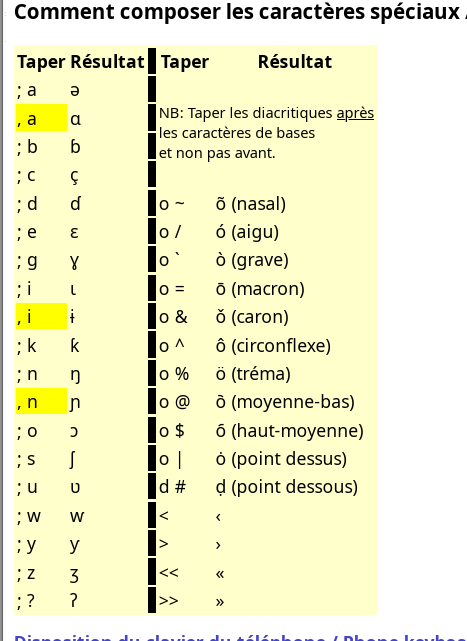

Mooré uses letters that are not on a French keyboard: ɛ, ɩ, ʋ and nasal vowels like ã, ẽ, ũ. The usual answer is to install Keyman and the Clavier du Burkina keyboard from SIL Burkina Faso. On Windows, that works well. On Linux with an AZERTY keyboard, it does not.
The problem: Keyman switches you to QWERTY
I installed Keyman and Clavier du Burkina on Ubuntu (GNOME). My keyboard is AZERTY, but my system language is English. As soon as I switched to the Keyman keyboard, typing the key labelled A gave q, and Z gave w. The layout was QWERTY.
The system language is not the cause. Every Keyman keyboard registered in IBus declares a US layout:
python3 -c "
import gi; gi.require_version('IBus', '1.0'); from gi.repository import IBus
for e in IBus.Bus().list_engines():
if 'keyman' in e.get_name():
print(e.get_name(), e.get_layout())
"
# mos:/home/.../clavbur9/clavbur9.kmx usWhen you activate the engine, GNOME switches the keyboard to us. On my machine, setxkbmap -query showed layout: fr,us,us. Keyman for Linux also reads keys by their position on a US keyboard, and Keyman 18 has no setting to use a different base layout.
So on Linux, Clavier du Burkina only works if you type as if on QWERTY.
The fix: the French (Togo) layout
Linux already includes a keyboard layout for this: French (Togo) (tg in XKB). It is standard French AZERTY with West African letters added on AltGr (the right Alt key). No Keyman needed.
To add it:
- Open Settings → Keyboard.
- Under Input Sources, click + Add Input Source.
- Choose French → French (Togo). If it isn’t listed, click ⋮ and search for “Togo”.
- Press Super + Space to switch between layouts.
Or from a terminal:
gsettings set org.gnome.desktop.input-sources sources "[('xkb', 'fr'), ('xkb', 'tg')]"Typing the Mooré letters
| Letter | Keys |
|---|---|
| ɛ / Ɛ | AltGr + r / AltGr + Shift + r |
| ɩ / Ɩ | AltGr + i / AltGr + Shift + i |
| ʋ / Ʋ | AltGr + v / AltGr + Shift + v |
| ã | AltGr + !, then a |
| ẽ | AltGr + !, then e |
| ũ | AltGr + !, then u |
AltGr + ! is a dead key: nothing appears when you press it, and the tilde goes on the next letter you type. Press the tilde first, then the vowel. This works with capitals too (Ã, Ẽ, Ũ) and with ɛ and ɔ (ɛ̃, ɔ̃).
The layout also has other letters used in the region:
| Letter | Keys |
|---|---|
| ɔ | AltGr + o |
| ŋ | AltGr + n |
| ɲ | AltGr + m |
| ɓ | AltGr + b |
| ɗ | AltGr + t |
| ƴ | AltGr + y |
| ɣ | AltGr + g |
Tone marks are dead keys as well: acute AltGr + *, grave AltGr + ù, macron AltGr + : and caron AltGr + ^.
Windows
You can download the Windows version of Keyman from keyman.com/windows/download. The Clavier du Burkina keyboard (clavbur9) works well if you already type on a French AZERTY layout. It keeps the familiar AZERTY keys and adds Mooré letters, along with characters for other languages of Burkina Faso, as shown below:

Summary
- On Linux, Keyman keyboards use a US QWERTY base, whatever your physical keyboard is.
- If you type on AZERTY, use the built-in French (Togo) layout.
- ɛ, ɩ, ʋ are on AltGr + r, i, v, and nasal vowels are AltGr + ! followed by the vowel.
- On Windows, Clavier du Burkina works well with a French AZERTY layout.